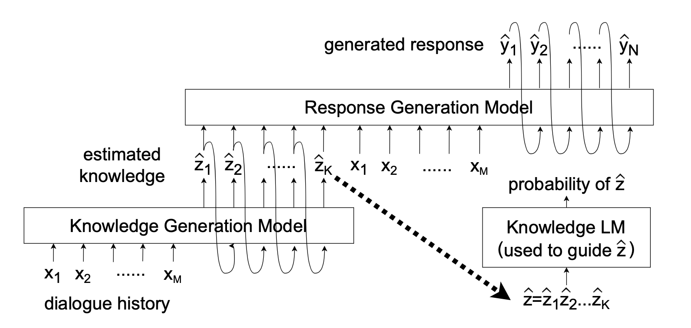

|
Quality Estimation without Human-labeled Data
Yi-Lin Tuan, Ahmed El-Kishky, Adithya Renduchintala, Vishrav Chaudhary, Francisco Guzmán, Lucia Specia.
EACL 2021 short paper.
|
|

|
Knowledge Injection into Dialogue Generation via Language Models
Yi-Lin Tuan, Wei Wei, William Wang
arXiv preprint arXiv:2004.14614
|

|
DyKgChat: Benchmarking Dialogue Generation Grounding on Dynamic Knowledge Graphs
Yi-Lin Tuan, Yun-Nung Chen, and Hung-yi Lee.
EMNLP 2019 long paper. SAP Best Paper Award in SoCalNLP19.
|

|
Personalized Dialogue Response Generation Learned from Monologues
Feng-Guang Su*, Aliyah Hsu*, Yi-Lin Tuan, and Hung-yi Lee.
Interspeech 2019
|

|
Proximal Policy Optimization and its Dynamic Version for Sequence Generation
Yi-Lin Tuan*, Jinzhi Zhang*, Yujia Li, and Hung-yi Lee. (*co-first author)
arXiv preprint arXiv:1808.07982
|

|
Improving Conditional Sequence Generative Adversarial Network by Stepwise Evaluation.
Yi-Lin Tuan and Hung-yi Lee.
IEEE/ACM Transaction on Audio, Speech, and Language Processing (TASLP), 2019.
|

|
Transcribing Lyrics from Commercial Song Audio: the First Step towards Singing Content Processing.
Che-Ping Tsai*, Yi-Lin Tuan*, and Lin-shan Lee. (*co-first author)
IEEE International Conference on Acoustics, Speech and Signal Processing (ICASSP) 2018.
|